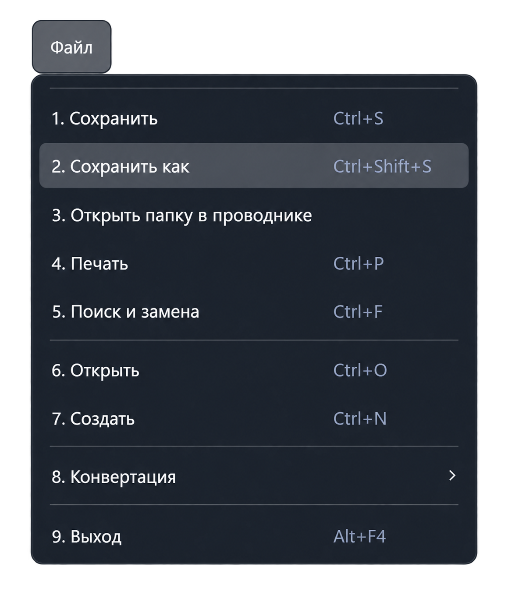

Функция «Сохранить как»
Команда «Файл → Сохранить как» сохраняет активный документ с выбранными именем, расположением и типом файла. Она доступна при активном текстовом редакторе.
Сочетание клавиш: Ctrl + Shift + S.

Порядок действий
- Переключитесь на нужную вкладку и вызовите команду.
- В системном окне выберите папку назначения.
- Укажите имя файла и выберите тип: программа контроля
.pkwили текстовый файл.txt. - Подтвердите сохранение. При отмене диалога документ остаётся с прежним именем и путём.
После сохранения
Приложение обновляет имя вкладки и путь активного документа. Следующие вызовы «Сохранить» записывают изменения уже по новому пути.
Если выбран другой путь, исходный файл не удаляется этой командой. Если выбран существующий файл, внимательно проверьте запрос на его замену перед подтверждением.
Выбор расширения .pkw не выполняет трансляцию и не подтверждает корректность программы контроля. Проверка команд и запуск вызываются отдельно.